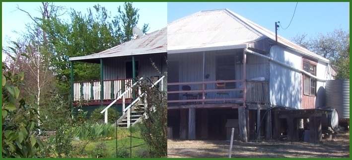

Rye Park - 2007 - 2020
Our house at Rye Park NSW
In August 2007 we bought this old slab cottage on one acre in Rye Park, which is near Boorowa north of Yass. It was pretty run-down, but structurally sound and not in need of any major renovations. We moved here in April 2009, having finally been able to wind up our affairs in Sydney. These pages show the changes we made to the place before we moved to Bundanoon in 2020.
News from our time here is archived into years:
2019 2018 2017 2016 2015 2014 2013 2012 2011 2010 2009 2008